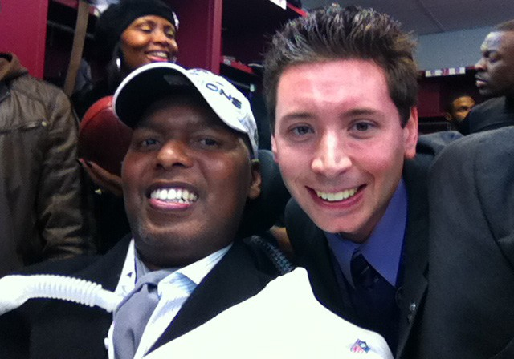
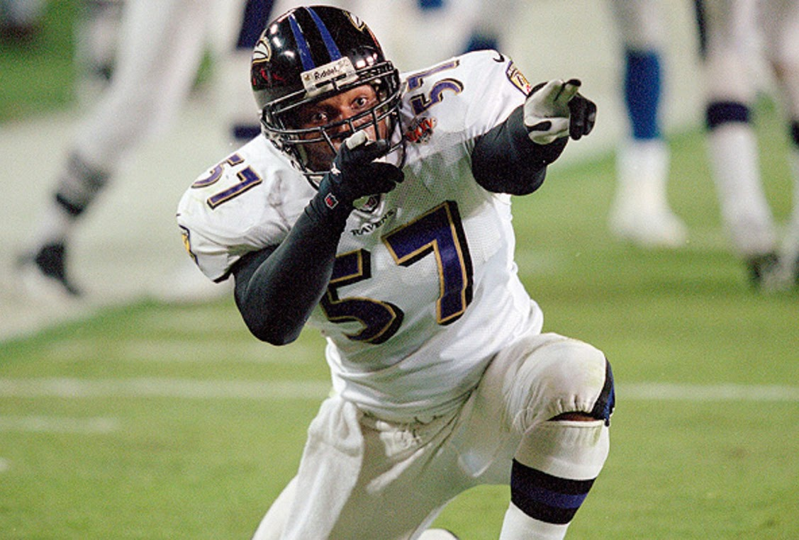
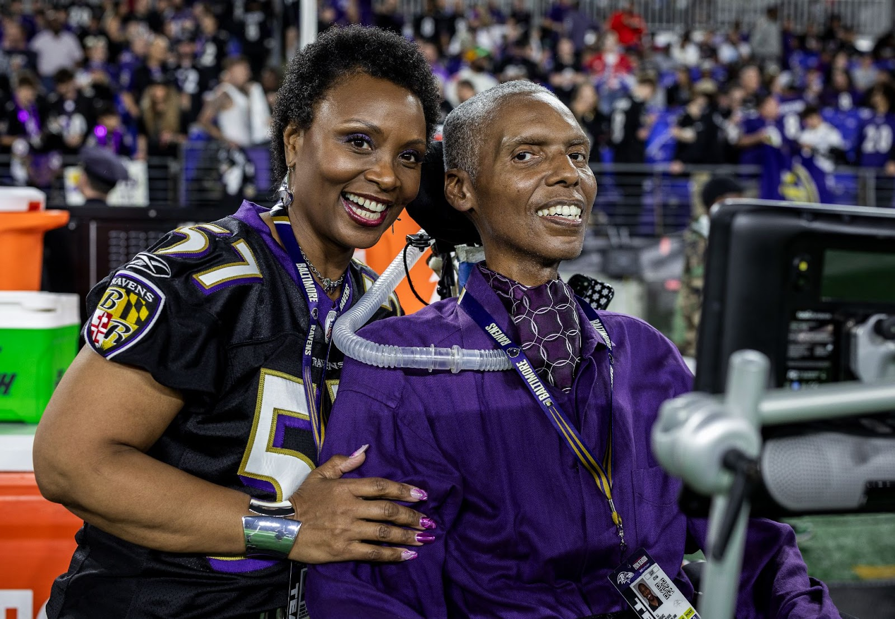
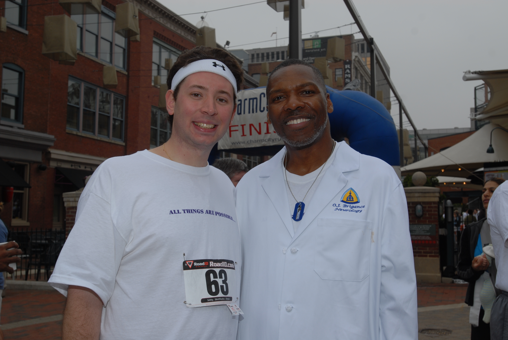

Why I Run
Running seven marathons across the globe in a week seems crazy, right?! It also requires an immense commitment to training. So why am I doing this?

O.J. Brigance · #57O.J.’s Story
O.J. Brigance is the utmost example of the phrase “All things are possible.” His remarkable story started on the football field. After going undrafted in 1991, he began his pro career in the Canadian Football League, where he became a CFL All-Star and Grey Cup Champion. In 1996 he signed with the Miami Dolphins, where he was voted team captain and named the Ed Block Courage Award recipient. In 2000, he helped the Baltimore Ravens win Super Bowl XXXV — making the game’s first tackle.
Following his seven-year NFL playing career, O.J. became the Ravens’ director of player development. In 2007, at the age of 37, he was diagnosed with amyotrophic lateral sclerosis, a neurodegenerative disease that slowly takes away a person’s ability to walk, talk, eat and eventually breathe. Mental capacity, however, remains intact. There is no cure for ALS, and the average life expectancy is 2–5 years after diagnosis. (Just 10% of patients live 10+ years.)

Shortly after his diagnosis, O.J. and his wife, Chanda, created the Brigance Brigade Foundation to equip, encourage, and empower people living with ALS (PALS). For nearly two decades, the BBF has helped improve the quality of life for hundreds of PALS and their families, and provided access to needed equipment and support services.
In his 20th year battling ALS, O.J. continues his transcendent work. He still comes to work at the Ravens facility, offering counsel to players, coaches and staff, while remaining actively involved in the philanthropic mission of the BBF.
“Extraordinary accomplishments are only achieved when we are able to overcome extraordinary challenges.”
— O.J. Brigance

From The Runner
For nearly 20 years, I’ve witnessed a strength and resiliency that few can imagine. I met O.J. less than a month after he had been diagnosed with ALS. Besides his quick wit and sense of humor, the thing that stood out most to me about O.J. was his smile — which was the biggest in the building — and his genuine care for other people.
Once one of the top athletes in the world, ALS quickly inhibited O.J.’s ability to walk, and soon after, deprived him of his ability to speak. Eventually, the disease suppressed his breathing, requiring a breathing tube and ventilator to survive.

Despite these challenging circumstances, O.J.’s determination is unwavering. He was often referred to as the strongest man in the building and the spiritual foundation of the Ravens. Before I ran my first marathon in 2012, O.J. shared meaningful words of encouragement — a message that required significant effort to communicate by typing words with his eyes on a screen, and a message I heard in my head when the race got tough.
When I first learned of the World Marathon Challenge in 2018, I questioned if it was humanly possible. In perspective though, running 183 miles around the globe in a week seems easier than the daily struggle someone with ALS goes through just to live their life. I recognize that I’ve been blessed with a gift — not of endurance, but simply with two healthy legs and the ability to run and walk — and I feel called to use that gift for a greater purpose.
I hope you’ll support O.J. and me on this journey to provide necessary assistance to ALS patients in need!